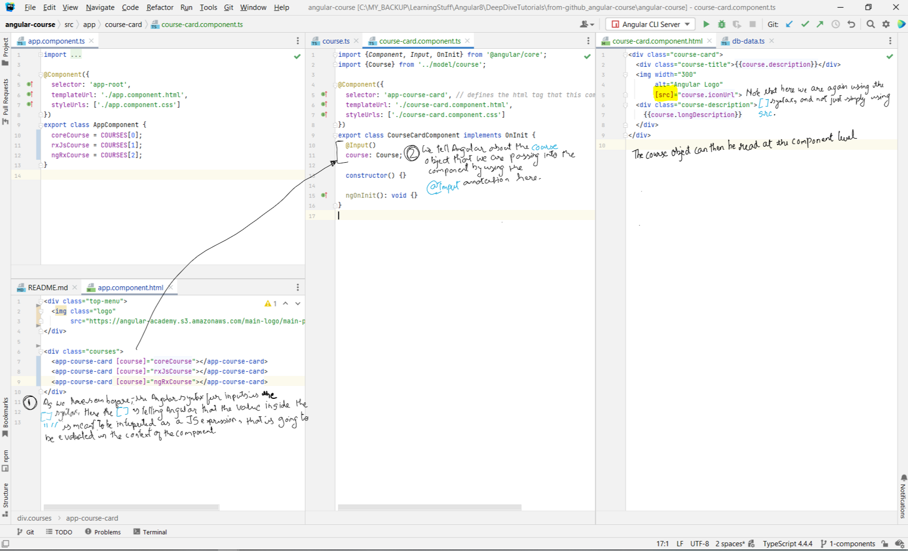

This page contains my notes from the following books:
a) Angular in Action
b) ng-Book - The complete book on Angular
c) Angular Core Deep Dive Video Lectures- Angular University
a) Angular in Action
b) ng-Book - The complete book on Angular
c) Angular Core Deep Dive Video Lectures- Angular University
Index:
a) Angular in Action
Chapter 0: TypeScript
Chapter 1: Angular: A Modern Web Platform
Chapter 2: Building your first Angular App
Chapter 3: App Essentials
Chapter 4: Component Basics
Chapter 0: FAQs
b) ng-Book - The complete book on Angular
Chapter 1: Writing your first Angular Web Application
Chapter 3: How Angular Works
c) Angular Course: Angular Core Deep Dive
Chapter 0: TypeScript
- Mozilla JavaScript Guide
- Mozilla JavaScript Object-Oriented Guide
- Read more at MDN about what inheritance is all about.
- Link to LearnXInYMinutes where x = Typescript.
- ES5 is short for "ECMAScript 5", otherwise known as "regular JavaScript". ES5 is the normal JavaScript we all know. It runs in more-or-less every browser. ES6 is the next version of JavaScript. The TypeScript transpiler takes our TypeScript code as input and outputs ES5 code that nearly all browsers understand. If we wanted to convert ES6 code (not TypeScript) to ES5 there are two major ES6-to-ES5 transpilers:
- You can install TypeScript using:
- Mozilla JavaScript Object-Oriented Guide
- Read more at MDN about what inheritance is all about.
- Link to LearnXInYMinutes where x = Typescript.
- ES5 is short for "ECMAScript 5", otherwise known as "regular JavaScript". ES5 is the normal JavaScript we all know. It runs in more-or-less every browser. ES6 is the next version of JavaScript. The TypeScript transpiler takes our TypeScript code as input and outputs ES5 code that nearly all browsers understand. If we wanted to convert ES6 code (not TypeScript) to ES5 there are two major ES6-to-ES5 transpilers:
traceur by
Google and babel created by the JavaScript community. - You can install TypeScript using:
npm install -g typescriptWhat do we get with TypeScript
- There are 5 big differences that TypeScript brings in over ES5:
- types
- classes
- decorators
- imports
- language utilities (eg. Destructuring)
Types
- Consider the following example:
- In the above example we are defining a new function called
-
Expand Gist 
greetText which takes one argument
called name. The syntax name: string represents that the function expects name
to be a string. Our code will not compile if we call this function with anything other than a
string. -
greetText also has a syntax after the parentheses : string { //code }. The
colon specifies that we will specify a return type for this function - which in this case is a
string. You you try returning a number instead, it will throw an error.
Built-in types
- Some examples of built in types are as follows:
Expand Gist
Classes
- In JavaScript ES5 object oriented programming was accomplished by using prototype-based objects. This
model doesn't use classes, but instead relies on prototypes. In ES6 we finally have built-in classes
in JavaScript.
- To define a
- A class can have properties, methods, and
- To instantiate a class, we use the
- Properties define data attached to an instance of a class. For example, a class named Person might have properties like first_name, last_name and age.
- Each property in a class can optionally have a type. For example, we could say that the first_name and last_name properties are strings and the age property is a number.
- The declaration for a Person class that looks like this:
- Methods are functions that run in context of an object. To call a method on an object, we first have to have an instance of that object.
- When methods don't declare an explicit returning type and return a value, it's assumed they can return anything (
- Consider the Person class declared above again:
- Constructor methods must be named
- When a class has no constructor defined explicitly one will be created automatically.
- In TypeScript you can have only one constructor per class. That is a departure from ES6 which allows one class to have more than one constructor as long as they have a different number of parameters.
- So how do you manage trying to have multiple constructors in typescript? You use optional parameters. As shown on this SO answer here.
- Adding a constructor to our Person class, we get:
- Read more at MDN about what inheritance is all about.
- Inheritance is a way to indicate that a class receives behavior from a parent class. Then we can override, modify or augment those behaviors on the new class.
- Inheritance is achieved through the
- Consider the following example:
- To define a
class, we do this:
Expand Gist
constructors. - To instantiate a class, we use the
new keyword. Use new Person() to create
a new instance of the Person class, for example.
Properties
:- Properties define data attached to an instance of a class. For example, a class named Person might have properties like first_name, last_name and age.
- Each property in a class can optionally have a type. For example, we could say that the first_name and last_name properties are strings and the age property is a number.
- The declaration for a Person class that looks like this:
Expand Gist
Methods
:- Methods are functions that run in context of an object. To call a method on an object, we first have to have an instance of that object.
- When methods don't declare an explicit returning type and return a value, it's assumed they can return anything (
any type). Note that a void value is also a valid any
value. - Consider the Person class declared above again:
Expand Gist
Constructors
:- Constructor methods must be named
constructor. They can optionally take parameters but
they can't return any values, since they are called when the class is being instantiated (i.e. an
instance of the class is being created, no other value can be returned). - When a class has no constructor defined explicitly one will be created automatically.
- In TypeScript you can have only one constructor per class. That is a departure from ES6 which allows one class to have more than one constructor as long as they have a different number of parameters.
- So how do you manage trying to have multiple constructors in typescript? You use optional parameters. As shown on this SO answer here.
- Adding a constructor to our Person class, we get:
Expand Gist
Inheritance
:- Read more at MDN about what inheritance is all about.
- Inheritance is a way to indicate that a class receives behavior from a parent class. Then we can override, modify or augment those behaviors on the new class.
- Inheritance is achieved through the
extends keyword. - Consider the following example:
Expand Gist
Fat Arrow Functions
- Fat arrow
- Consider the run() function we wrote above and let us see how we can re-write it as an arrow function
- They also make writing higher-order functions easier.
=> functions are a shorthand notation for writing functions. - Consider the run() function we wrote above and let us see how we can re-write it as an arrow function
Expand Gist
Expand Gist
Template Strings
- You can add variables directly in your Strings by using template strings.
- You can also wrote multi-line strings by using these without having to use the concatenation (+) operator
- You can also wrote multi-line strings by using these without having to use the concatenation (+) operator
Expand Gist
Difference between functions and methods in JS
- SO Source
- Something, something.. good luck
- Something, something.. good luck
Chapter 1: Angular - A Modern Web Platform
Why should Angular be viewed as a platform, and not a framework?
- A framework is usually just the code library used to build an application, whereas a
platform is
more holistic and includes tooling and support beyond a framework. AngularJS was
focused solely on building web applications in the browser and was clearly a framework.
Angular, on the other hand, provides many other features such as:
Dedicated CLI for application development, testing, and deployment:
You can install the CLI using npm:
Offline rendering capabilities on many back-end server platforms:
Compiling output in Angular is decoupled from the browser in a way that allows Angular applications to
be rendered in different environments, such as a server or desktop app. The compiler in Angular is
responsible for
resolving data bindings, registering event handlers, and rendering out the resulting HTML for
components. The term server rendering is about the notion that it shouldn't matter where you run
the JavaScript engine that executes Angular code. It should be possible to run Angular universally, such
as with browser JavaScript engines, NodeJS, or even less common
engines like Java's Nashorn engine. This greatly increases the ways in which Angular
can be used. Server rendering allows for faster loading on mobile devices and improves the
performance/reponsiveness of the app in the browser.
Desktop-, mobile-, and browser-based application execution environments:
Angular's rendering design makes it possible to support rendering out to different native platforms.
This means you can share a lot of code between your Angular applications, even if some are designed to
build mobile apps and others are web applications.
Comprehensive UI component libraries, such as Material Design:
Rather than having to build your own charts or tabs components, you can use one of the many prebuilt
options.
..hence classifying it as a platform rather than just a framework.
npm install -g @angular/cli
To see the full list of features, you can run ng help to output the current help
documentation.
What is a Component?
- Component is a way to create custom HTML elements in your application.
- When we build components, the following are the tenets we should consider when designing the best components possible.Encapsulation - Keeping component logic in a single place
Isolation - Keeping component internals hidden from external actors
Reusability - Allowing component reuse with minimal effort
Evented - Emitting events during the lifecycle of the component
Customizable - Making it possible to style and extend the component
Declarative - Using a component with simple declarative markup
- The following 4 ideas are central to the definition of Components:
Custom elements (encapsulation, declarative, reusability, evented):
Custom elements means being able to extend HTML with our own additional elements. You can read
more here. Custom elements have a lot of the stuff
necessary for building components. It gives us a declarative way to create
a reusable component, which encapsulates the internal mechanics of the component away
from the rest of the application, but can emit events to enable other components to hook
into the lifecycle. Angular uses these concepts in its implementation of components. Every Angular
component is a custom element and fulfills the four
tenets (and more) that we expect to get from a custom element.
Shadow DOM: The Shadow DOM is an isolated Document Object Model (DOM) tree that's detached from
the typical CSS inheritance, allowing you to create a barrier between markup inside and outside of the
Shadow DOM. For example, if you have a button inside of a Shadow DOM
and a button outside, any CSS for the button written outside the Shadow DOM won't
affect the button inside it. This is important for Angular because it allows us to have
better control over how CSS affects the way the components display.
Templates: Templates allow us to create isolated fragments of the DOM to use in our components.
Read more about it here.
Templates are often used with the Shadow DOM because it allows you to define the
template and then inject it into the shadow root. Without templates, the Shadow DOM
APIs would require us to inject content node by node. They're also used by Angular as
part of the lifecycle of components and the compilation process, allowing Angular to
keep isolated, inert copies of the template as data changes and needs to be recompiled.
JavaScript modules: Modules are an isolated
piece of JavaScript that can be used to generate a component, create a reusable service,
or do anything else JavaScript can do. They're fundamentally a way to encapsulate application code and
choose what's available for the other parts of the application to use. In JavaScript, a module is any
file of JavaScript code that contains the
- When we build components, the following are the tenets we should consider when designing the best components possible.
- The following 4 ideas are central to the definition of Components:
export keyword. Modules export values that they
want to expose to the application and can keep other parts of the internal logic private. Then, in order
to use an exported value, you have to first import it from another module. Executing an Angular
application is fundamentally loading a module that contains the application bootstrapping logic, which
in turn starts to load and trigger additional modules.
Chapter 2: Building your first Angular App
Setting up the project
- In the terminal, start from a directory that you want to generate a new project folder inside. Then you
can run the following command to generate a new project, and then start the development server:
- Once done, you can point your browser to
ng new stocks cd stocks ng serve - Once done, you can point your browser to
http://localhost:4200 to see the landing page. Top-level contents of the project generated by the CLI and their roles
| Asset | Role |
|---|---|
| e2e | End-to-end testing folder, contains a basic stub test |
| node_modules | Standard NPM modules directory, no code should be placed here |
| src | Source directory for the application. All your application code goes here. |
| .editorconfig | Editor configuration defaults |
| .angular-cli.json | Configuration file for the angular-cli. angular-cli.json file has been
renamed/replaced with angular.json in version 6 of Angular. SO Link
|
| karma.conf.js | Karma configuration file for unit test runner. Unit tests are run using karma. |
| package.json | Standard NPM package manifest file. Difference between "^1.4.0"
and "~2.0.1" version numbers.
|
| package-lock.json | It stores an exact, versioned dependency tree rather than using starred versioning like package.json itself (e.g. 1.0.*). This means you can guarantee the dependencies for other developers or prod releases, etc. |
| protractor.conf.js | Protractor configuration file for e2e test runner. This is now under the e2e folder. End-to-end testing is done using protractor. |
| README.md | Standard readme file, contains starter information |
| tsconfig.app.json | TypeScript compiler configuration for apps |
| tsconfig.json | Default configuration file for TypeScript compiler |
| tsconfig.spec.json | TypeScript compiler configuration for unit tests |
| tslint.json | TSLint configuration file for TypeScript linting rules |
Contents of the src directory and their roles
| Asset | Role |
|---|---|
| app | Contains the primary App component and module |
| assets | Empty directory to store static assets like images |
| environments | Environment configurations to allow you to build for different targets, like dev or production |
| favicon.ico | Image displayed as browser favorite icon |
| index.html | Root HTML file for the application |
| main.ts | Entry point for the web application code |
| polyfills.ts | Imports some common polyfills required to run Angular properly on some browsers. What are polyfills |
| styles.css | Global stylesheet |
| test.ts | Unit test entry point, not part of application |
How Angular renders the base application
- Angular requires at least one component and one module. A component is the basic
building block of Angular applications and acts much like any other HTML element. A
module is a way for Angular to organize different parts of the application into a single
unit that Angular can understand. Components are for functionality and structure, whereas
modules are for packaging and distribution. You might think of components as LEGO bricks,
which can be many different shapes, sizes, and colors, and modules would be the packaging the LEGOs come in.
- Look at
src/app/app.component.ts in the project. -The
@Component annotation declares that this class is a component by accepting an
object. - It has a
selector property that declares the HTML selector of the component.
That means the component is used in the template by adding an HTML tag
<app-root></app-root>. Know that with this selector we're defining a new
HTML tag that we can use in our markup. The selector here indicates which DOM
element this component is going to use. In this case, any <app-root></app-root>
tags that appear within a template will be compiled using the AppComponent class and get any
attached functionality. - The
templateUrl property declares a link to a template containing an HTML template. - The
styleUrls property contains an array of links to any CSS files that
should be loaded for this component. - The AppComponent class has a single property called
title. The
value is what you should see rendered in the browser, so this is the source of the value
that ultimately appears.
Expand Gist
src/app/app.component.html in the project.
Expand Gist
{{title}} with the value of the title property from the component.
This is called interpolation and is frequently used to display data in a template.
- The App module is the packaging that helps tell Angular what's available to render. It also describes the various dependencies that are needed to render the module. There's at least one module in an application, but it's possible to create multiple modules for different reasons
- The CLI generated the module for us, so we can look at it in
src/app/app.module.ts
Expand Gist
AppModule, and NgModule is the decorator. - The first block is to import any Angular dependencies that are common to most apps and the App component.
- The
NgModule decorator takes an object with a few different properties. - The
declarations property is to provide a list of any components and directives to make
available
to the entire application. - The
imports property is an array of other modules upon which this module depends - in this
case, the BrowserModule
(a collection of required capabilities). If you ever include other modules, such as third-party modules or
ones you've created, they also need to be listed here. - The
providers property, is empty by default. Any services that are created are to be listed
here.
providers is used for dependency injection. So to make a service available to be
injected throughout our application, we will add it here.- The
bootstrap property defines which components to bootstrap at runtime. Typically, this will
be the same App component, and the CLI already set it up for us. - Why export an empty class
AppModule: The body of the class is indeed empty. But that decorator
above the class (@NgModule) is giving that class its functionality. So really, that class isn't
empty. It just doesn't require any extra logic after the decorator is applied to it.
bootstrapModule takes a class as input and assumes that that class is decorated with @NgModule
- What is the difference between using
import to import a class at the top of the file vs using
imports to add a module: You put something in your NgModule 's imports if you're
going to be using it in your templates or with dependency injection.
- The application must be bootstrapped at runtime to start the process of rendering.
- Look at
angular.json file. One of the properties is the main property. By
default, it points to the src/app/main.ts file. - This means that when the application gets built, it will automatically call the contents of the
main.ts file as the first set of instructions. - The role of main.ts is to bootstrap the Angular application. It is located in:
src/app/main.ts
Expand Gist
platformBrowserDynamic object is used to tell Angular which module is being loading, and
in this case that's the AppModule. It is important to understand that this is the point where
the code begins to execute. - This SO Link explains why we need the
platformBrowserDynamic. Your Angular application can start off in many ways,
but when you run on the browser you have a specific way of bootstrapping the application and that is defined
in @angular/platform-browser-dynamic. In short these packages contain angular features which
make getting an Angular app up and running possible in the browser. Bootstrapping is essential and one of
those features.- You should see the following in the
src/index.html file:
Expand Gist
app-root element and replace it with the rendered component. - And thus the sequence of loading the app is complete. The process can be understood as follows:
- When the application gets built, it automatically calls the contents of
main.ts. main.ts
bootstraps the AppModule. The control passes to the app.module.ts where it sees
the field bootstrap and figures out which component to use as the first in order to bootstrap
the application. Control then goes to the app.component.ts class where it sees the templateUrl
that it has to serve along with the selector app-root.
Building Services
- SO Link for when to use Services. Services come
in handy in the following scenarios:
a) When you want to share information between two or more controllers:
- One may use
b) When a functionality is to be used multiple times.
- SO link for how to create a Singleton Service.
- Services are objects that abstract some common logic that you plan to reuse in multiple places. Think of services is as sharable objects that any part of your app can import as needed. They can do about anything you need them to do, because they're objects. Using ES2015 modules, these classes are exported, and so any component can import them as necessary. They could also have functions or even static values, like a string or number, as a way to share data between various parts of your application.
- In the app, you'll want to have a list of the stocks for both the dashboard and manage pages to use. This is a perfect scenario of when to use a service to help manage the data and share it across different components.
- To generate a Service you run the following:
- Add the following code to the auto-generated class.
- The
- The
- In the constructor method, the
- The
- The
- There is one last thing that we have to do - in the
Side note about how Dependency Injection works in Angular:
- There are a few key pieces to the DI system.
- The first is the injector. This is the service that Angular provides for requesting and registering dependencies. You'll invoke the injector by declaring a type annotation on the property. This is what we are doing on line 22 of
- The second part of DI is providers. Providers are responsible for creating the instance of the object requested. The injector knows the list of available providers, and based on the name (which above is
- Anything that has been registered with an
- Now we know how to:
a) Create a service, make it injectable by using the
b) Import an external Module that your app depends on into your app
c) Register the service you created with the app so that other components can use it
Examples of both of these are present in the gist app.module_v2.ts
a) When you want to share information between two or more controllers:
- One may use
$rootScope
to also communicate between controllers, but it should be avoided as much as possible since it is a global
scope. b) When a functionality is to be used multiple times.
- SO link for how to create a Singleton Service.
- Services are objects that abstract some common logic that you plan to reuse in multiple places. Think of services is as sharable objects that any part of your app can import as needed. They can do about anything you need them to do, because they're objects. Using ES2015 modules, these classes are exported, and so any component can import them as necessary. They could also have functions or even static values, like a string or number, as a way to share data between various parts of your application.
- In the app, you'll want to have a list of the stocks for both the dashboard and manage pages to use. This is a perfect scenario of when to use a service to help manage the data and share it across different components.
- To generate a Service you run the following:
ng generate service services/stocks.
The CLI will generate the files in the src/app/services directory. - Add the following code to the auto-generated class.
Expand Gist
StockInterface interface is defined and exported for other components to use. This
provides a TypeScript definition of what a stock object should contain, which is used by TypeScript to
ensure the use of the data remains consistent. - The
StocksService class is exported and is decorated by the Injectable
decorator. The @Injectable() decorator marks it as a service that can be injected. The
decorator
is used to set up the proper wiring for Angular to know how to use it elsewhere, so
if you forget to include the decorator, the class might not be injectable into your application. - In the constructor method, the
HttpClient service is injected using the TypeScript
technique of declaring a private variable called http and then giving it a type of HttpClient.
- The
load() method makes a call to the HttpClient service to load the data for
current stock price values. The HttpClient service is called and returns an observable, which
is a construct for handling asynchronous events, such as data from an API call. - The
this.http.get<Array<StockInterface>> is the type variable. This is a
feature of TypeScript that tells it what kind of object it should expect. In this case it will expect
to get an array of objects that conform to the StockInterface. - There is one last thing that we have to do - in the
src/app/app.module.ts file
Expand Gist
- There are a few key pieces to the DI system.
- The first is the injector. This is the service that Angular provides for requesting and registering dependencies. You'll invoke the injector by declaring a type annotation on the property. This is what we are doing on line 22 of
stocks.service.ts file
above: constructor(private http: HttpClient){ }. Because we declare the type as
HttpClient (which is a known service in Angular), the application will use the injector
to ensure that the http property contains an instance of the HttpClient service.
- The second part of DI is providers. Providers are responsible for creating the instance of the object requested. The injector knows the list of available providers, and based on the name (which above is
HttpClient), it calls a factory function from the provider and returns the requested object.
- Anything that has been registered with an
NgModule's providers array is
available
to be injected in your application code (hence we add StocksService above in app.module_v2.ts
to the providers array).
- Now we know how to:
a) Create a service, make it injectable by using the
@Injectable decorator b) Import an external Module that your app depends on into your app
c) Register the service you created with the app so that other components can use it
Examples of both of these are present in the gist app.module_v2.ts
Creating your first Component
- Generate a new component by running the following:
- The CLI will generate a new component inside the
- The generated component contains an empty CSS file, basic HTML template, test stub, and empty class already initialized with the component annotation.
- Line 1,2
- The
- Let's move to
-
-
- The
- SO
Link explaining why we need to use
- The summary controller class starts with a property called
Because input is passed through a binding attribute, it will evaluate the expression and pass it into the
- Basically, this is all you need to remember: Angular expressions behave the same anytime there's a binding. They try to find a corresponding value in the controller to bind to the property.
- This SO Link goes into why we need the
- We also want to apply certain styling to the summary. Open the
- The
- The host selector is a way to specify that you want the styles to apply to the element that hosts the element, so in this case it will look at the Summary component element itself rather than the contents inside it.
- Look at the
- Now update the contents of the
- We store the loaded stock data onto a property called stocks. We also provide some typing information, which is imported from our Stocks service, so that TypeScript knows what kind of value to expect. Finally, instead of logging the data to the console, we store it on the stocks property.
- Now we need to change the
- The first line added
- The middle line shows the instantiation of a single Summary component, and the first value of the stocks array is bound into the stock property. The data returns as an array, so we're directly accessing the first value. Recall the input value we declared in the Summary component, which is also named stock.
- If everything was set up correctly, you should now see your first Component that displays a Summary card
for the current stock value of AAPL!!!!
ng generate component components/summary
- The CLI will generate a new component inside the
src/app/components/summary directory. - The generated component contains an empty CSS file, basic HTML template, test stub, and empty class already initialized with the component annotation.
Expand Gist
[ngClass]="{increase:isPositive(), decrease: isNegative()} is a special kind of
attribute known as a Directive. Directives allow you to modify the behavior and display of DOM
elements in a template. NgClass directive, for example, allows you to change the list of
classes that are attached.- The
NgClass directive is able to add or remove CSS classes to and from the element. It's
assigned a value, which is an object that contains properties that are the CSS class names (if you go into
summary.component.css you will see that there are CSS classes with names "increase" and "decrease"), and
those properties map to a method on the controller (to be written). If the method returns true, it will add
the class; if false, it
will be removed. In this snippet, the card will get the increase CSS class when it's positive,
or the decrease CSS class when it's negative.
- Let's move to
{{stock?.symbol?.toUpperCase()}}. The double curly braces syntax is the way to
display some value in the page (interpolation). The content between the braces is called an Angular
expression and is evaluated against the controller (like the directive), meaning that it will try to
find a property on the controller to display. If it fails, normally it will throw an error, but the safe
navigation operator ?. will silently fail and not display anything if the property is missing.
-
{{stock?.lastTradePriceOnly | currency:'USD':'symbol':'.2'}} shows another feature of Angular
called pipes, which are added directly into the expression to format the output. The interpolation
expression is extended with a pipe symbol, | , and then a pipe is named and optionally
configured with values separated with the colon : symbol. Pipes only modify the data before
it is displayed, and do not change the value in the controller. The double curly braces indicate that you
want to bind the data stored in the stock.lastTradePriceOnly property to display it. The data
is piped through the Currency pipe, which converts the value into a financial figure based on a USD figure,
and rounds to two decimal points.
-
{{stock?.change | currency:'USD':'symbol':'.2'}} ({{stock?.changeInPercent | percent:'.2'}})
has two different interpolation bindings with a currency or a Percentage pipe. The first will convert to the
same currency format, but the second will take a percentage as a decimal, such as 0.06, and turn it into 6%.
Note that the round brackets in the second interpolation are not the part of any syntax, they are just there
because the UI needs that value to be in round brackets.
- The
summary.component.html template needs a controller to wire up the data and the methods.
Make the following changes to the src/app/components/summary/summary.component.ts file.
Expand Gist
ngOnInit if we already have a constructor?
- The summary controller class starts with a property called
stock, which is preceded
with the Input annotation. This indicates that this property is to be provided to the
component by a parent component passing it to the summary. Properties are bound to
an element using an attribute, as you can see here - this (hypothetical) example will set the value of
stockData of the parent component in the stock property of the Summary component:<summary [stock]="stockData"></summary> Because input is passed through a binding attribute, it will evaluate the expression and pass it into the
stock @Input property for the Summary component to consume. - Basically, this is all you need to remember: Angular expressions behave the same anytime there's a binding. They try to find a corresponding value in the controller to bind to the property.
- This SO Link goes into why we need the
@Input decorator.
- We also want to apply certain styling to the summary. Open the
src/app/components/summary/summary.component.css file. - The
:host selector is used because we want components to be as self-contained as possible.
This relies on the Shadow DOM concepts discussed earlier. When Angular renders this component,
it will modify the output to ensure that the CSS selector is unique and doesn't accidentally interfere with
other elements on the page. - The host selector is a way to specify that you want the styles to apply to the element that hosts the element, so in this case it will look at the Summary component element itself rather than the contents inside it.
Expand Gist
- Look at the
src/app/app.module.ts file and you'll see that the CLI already modified
the module to include the Summary component in the App module. - Now update the contents of the
src/app/app.component.ts file. - We store the loaded stock data onto a property called stocks. We also provide some typing information, which is imported from our Stocks service, so that TypeScript knows what kind of value to expect. Finally, instead of logging the data to the console, we store it on the stocks property.
Expand Gist
- Now we need to change the
src/app/app.component.html file to use the Summary Component. - The first line added
*ngIf="stocks", which is a directive that will only render the contents
inside the element when the expression is true. In this case, it won't render the Summary component until
the stock data has been loaded. - The middle line shows the instantiation of a single Summary component, and the first value of the stocks array is bound into the stock property. The data returns as an array, so we're directly accessing the first value. Recall the input value we declared in the Summary component, which is also named stock.
Expand Gist
Components that use Components and Services
- Generate another Component:
- Make the following changes to
- The
- The
- But we don't load data from the service in the constructor for a number of reasons. The constructor fires early in the rendering of a component, which means that often, values are not yet ready to be consumed. Components expose a number of lifecycle hooks that allow you to execute commands at various stages of rendering, giving you greater control over when things occur.
- In our code, we use the
- The last step is to change the
- We see another element that has a new directive, NgFor. Like NgIf, it starts with
an
-
- So now we know how to:
a) Add a service to a component - inject it into the constructor of the controller class of the component
b) Nest components within other components - in the html file of the parent component, use the
c) Pass data from a parent component to a child component - use attribute binding of type
ng generate component components/dashboard. This will output new
files into the src/app/components/dashboard directory for the HTML, CSS, controller, and unit test. It also
adds the component to the App module (app.module.ts) to be immediately consumable. - Make the following changes to
src/app/components/dashboard/dashboard.component.ts
Expand Gist
DashboardComponent class is the component controller, and it declares that it
must implement the requirements of OnInit. If it doesn't, TypeScript will fail to compile the
code and throw an error. It then has two properties: an array of stocks and an
array of strings that represent the stock symbols to display. Initially they're empty arrays,
so we'll need to get them loaded for the component to render. - The
constructor method runs as soon as the component is created. It will import
the Stocks service onto the service property and then request the current list of stock
symbols from it. This works because this is a synchronous action that loads a value directly from memory.
- But we don't load data from the service in the constructor for a number of reasons. The constructor fires early in the rendering of a component, which means that often, values are not yet ready to be consumed. Components expose a number of lifecycle hooks that allow you to execute commands at various stages of rendering, giving you greater control over when things occur.
- In our code, we use the
ngOnInit lifecycle hook to call the service to load the stock
data. It uses the list of stock symbols that was loaded in the constructor. We then subscribe
to wait for the results to return and store them in the stocks property. This uses the observable approach
to handling asynchronous requests. We are using observables because the HttpClient returns an
observable for us to receive the response. This is exposed as a stream of data, even though it is
a single event.
- The last step is to change the
src/app/components/dashboard/dashboard.component.html file.
Expand Gist
* -
NgFor will then create an instance of the Summary component for each of the stock
items. It binds the stock data into the component. Each copy of the Summary component is distinct from the
others, and they don't directly share data.
- So now we know how to:
a) Add a service to a component - inject it into the constructor of the controller class of the component
b) Nest components within other components - in the html file of the parent component, use the
selector of the child componentc) Pass data from a parent component to a child component - use attribute binding of type
[nameOfDataFieldUsedInChildComponent]="nameOfDataFieldUsedInParentComponent". Remember to
annotate the nameOfDataFieldUsedInChildComponent in the child component with @Input
Components with forms and events
- Forms are essential in applications, and Angular comes with built-in support for building complex forms
with many features. Forms in Angular are comprised of any number of
- First, create a new component using
- We also need to add the
- Open
- The constructor uses the service to get the array of stock symbols and store it on the
symbols property. This doesn't require the
- The
- The
- The next section loops over the list of symbols using NgFor. For each
- The
controls, which are the
various types of inputs and fields the form may contain (such as a text input, a checkbox, or some custom
lement). - First, create a new component using
ng generate component components/manage. Now update the
src/app/app.component.html so that it is the app-manage component that is beign
served. - We also need to add the
FormsModule to our application, because we are going to use
the form features that aren't automatically included by Angular. Open up the
src/app/app.module.ts file and add a new import:
import { FormsModule } from '@angular/forms'; - Open
src/app/components/manage/manage.component.ts and add the following:
Expand Gist
OnInit lifecycle hook, because it's a synchronous
request to get data that exists in memory.
Expand Gist
(submit)="add()" attribute is a way to add an event listener, known
as an event binding. When the form is submitted (which is done by pressing Enter), it
will call the add method. Any attribute that's surrounded by parentheses is an event
binding, and the name of the event should match the event without the on
(onsubmit
is submit). - The
[(ngModel)]="stock" attribute is a two-way binding that will sync the value of the
input and the value of the property in the controller anytime it changes from either
location. This way, as the user types into the text field, the value will be immediately
available for the controller to consume. When the user hits Enter, the submit event
fires and will use the value of the stock property when adding the new symbol. - The next section loops over the list of symbols using NgFor. For each
symbol, it will create
a local variable called symbol, create a new table row that binds the value, and a button
that's for removing the item. - The
remove button contains another event binding, this one to handle the click
event. The (click)="remove(symbol)" attribute adds an event listener to the click
event and will call the remove method in the controller, passing along the symbol.
Because there are multiple instances of the button, each one passes along the local variable to know which
symbol to remove.
Application Routing
- Routing configures the different pages that the application can render. Angular has a router that
works well with the Angular architecture by mapping components to routes.
- Create a new file at
- The router works by declaring an outlet in the template, which is the place in the
template that the final rendered component will be displayed. Think of the outlet as
the default placeholder for the content, and until the content is ready to be displayed,
it will be empty.
- The
- The routes are defined as an array of objects that have at least one property - in this case two, for a URL path and a component. For the first route, there's no path, so it acts as the application index (which will be http://localhost:4200) and links to the Dashboard component. The second route provides a URL path of manage (which will be http://localhost:4200/manage) and links to the Manage component.
- Finally, we create a new value
- In
- So now we know how to:
a) Add routing to our app so that when a particular link is clicked, the corresponding intended component is rendered.
- In the
- This declares the specific location in the application that the router should render the
component. It's the same place that we've put our components while building them, so
it should make sense that this is the best place.
- Then we need to update the links to use a new directive that will set up the navigation between routes. The RouterLink directive binds to an array of paths that are used to build a URL. The directive parses the array and tries to match to a known route. Once it matches a route, it will add an href to the anchor tag that correctly links to that route.
- Create a new file at
src/app/app.routes.ts
Expand Gist
- The
RouterModule is used to activate the router and accepts the routes configuration when
it's initialized. We also import the two routable components, the Dashboard and Manage components, so we
can reference them properly in our routes configuration. - The routes are defined as an array of objects that have at least one property - in this case two, for a URL path and a component. For the first route, there's no path, so it acts as the application index (which will be http://localhost:4200) and links to the Dashboard component. The second route provides a URL path of manage (which will be http://localhost:4200/manage) and links to the Manage component.
- Finally, we create a new value
AppRoutes, which is assigned to the result of
RouterModule.forRoot(routes). It's a way to pass configuration to the module. In this case,
we're passing the array of routes. We export this so we can import it into our App module and register it.
- In
src/app/app.module.ts:
Expand Gist
a) Add routing to our app so that when a particular link is clicked, the corresponding intended component is rendered.
- In the
src/app/app.component.html file, make the following changes:
Expand Gist
- Then we need to update the links to use a new directive that will set up the navigation between routes. The RouterLink directive binds to an array of paths that are used to build a URL. The directive parses the array and tries to match to a known route. Once it matches a route, it will add an href to the anchor tag that correctly links to that route.
Chapter 3: App Essentials
Chapter 4: Component Basics
Angular Core Deep Dive
- Angular Core Deep Dive video series link.
Index:
Chapter 2: Development Environment Setup
Chapter 3: Custom HTML Elements, Model vs View
Chapter 4: Key Features of Angular Core
Chapter 5: Angular Components and Core Directives
Chapter 6: Building our First Angular Component
Chapter 7: Component Inputs and the
Chapter 8: Angular Component
Chapter 9: The Angular ngFor Core Directive (also conditionally add styles to HTML elements)
Chapter 10: Angular ngIf Directive and the Elvis Operator
Chapter 11: Angular ngClass Core Directive
Chapter 12: Angular ngStyle Core Directive
Chapter 13: Angular ngSwitch Core Directive
Chapter 14: Angular ng-container Core Directive
Chapter 15: Angular Built-In Pipes
Chapter 16: Angular View Child Decorator - How Does it Work?
Chapter 17: View Child - Learn the multiple View Query Configuration Options
Chapter 18: The AfterViewInit Lifecycle Hook - How deep can we query with View Child?
Chapter 19: The View Children Decorator and Query List In Detail
Index:
Chapter 2: Development Environment Setup
Chapter 3: Custom HTML Elements, Model vs View
Chapter 4: Key Features of Angular Core
Chapter 5: Angular Components and Core Directives
Chapter 6: Building our First Angular Component
Chapter 7: Component Inputs and the
@Input Decorator Chapter 8: Angular Component
@Output - Custom Events and Event Emitters Chapter 9: The Angular ngFor Core Directive (also conditionally add styles to HTML elements)
Chapter 10: Angular ngIf Directive and the Elvis Operator
Chapter 11: Angular ngClass Core Directive
Chapter 12: Angular ngStyle Core Directive
Chapter 13: Angular ngSwitch Core Directive
Chapter 14: Angular ng-container Core Directive
Chapter 15: Angular Built-In Pipes
Chapter 16: Angular View Child Decorator - How Does it Work?
Chapter 17: View Child - Learn the multiple View Query Configuration Options
Chapter 18: The AfterViewInit Lifecycle Hook - How deep can we query with View Child?
Chapter 19: The View Children Decorator and Query List In Detail
Interesting Links
- Zone Primer doc.
- Angular Change Detection - How Does It Really Work?
- OnPush change detection
- SO Link for Difference between [(ngModel)] and [ngModel] for binding a state to a property
- Angular Change Detection - How Does It Really Work?
- OnPush change detection
- SO Link for Difference between [(ngModel)] and [ngModel] for binding a state to a property
Chapter 1: Angular Core Deep Dive - Helicopter View
Chapter 2: Development Environment Setup
- Link to tutorial.
- Install node/npm:
- Install Angular CLI:
-
- If you run into this error when trying to run
- Run
- Go to the Webstorm terminal and run
- Install node/npm:
npm install -g npm. The -g flag means that it will be installed globally (gives the ability to run commands on the CLI from
anywhere). Check the version installed by running npm -v or node -v - Install Angular CLI:
npm install -g @angular/cli -
ng will show the available commands that you can run. Had to run this in admin version of Command Prompt. The idea here is that Angular is not just a web
framework, but rather an entire ecosystem of tools that help you to build web frameworks. - If you run into this error when trying to run
ng commands: "ng.ps1 cannot be loaded because running scripts is disabled on this system", run the following
command in the Command Prompt while logged in as the Admin: powershell Set-ExecutionPolicy RemoteSigned. Source. - Run
ng new nameOfTheProject in order to create a new directory and a new Angular app. The directory created will have name as nameOfTheProject.
(Angular Routing: No, Stylesheet: CSS) - Go to the Webstorm terminal and run
npm start. This will deploy the application on the port 4200 and can be accessed here: http://localhost:4200/ Chapter 3: Custom HTML Elements, Model vs View
- Link to tutorial
- The Angular Core module allows us to create our own custom html tags (think div, li, etc.). The
-
- Main two takeaways:
a) The main feature of Angular is the ability of defining our own custom HTML elements (
b) Separation between view and model. The view is the html file, the model is the
- The Angular Core module allows us to create our own custom html tags (think div, li, etc.). The
app-root tag below is not a standard browser element, we have
created it. We have constructed it using a construct that is known as a Component. A Component allows us to link some style (styleUrls) and html
(templateUrl), with some typescript logic (interpolation operator: {{ }}). Anything within {{ }} is evaluated as a JS expression within
the context of the component. -
@Component is a decorator that identifies the class as an Angular component. - Main two takeaways:
a) The main feature of Angular is the ability of defining our own custom HTML elements (
app-root). This allows us to extend the browser functionality with our own
functionality. b) Separation between view and model. The view is the html file, the model is the
@Component associated with the html, and the html can access values in the
component using {{ }}.
Show Image
Chapter 4: Key Features of Angular Core
- Link to tutorial.
- The
- The angular input property syntax
- Another thing that we can do with the Angular Template Syntax is handle browser native events. We do that like this:
- Another thing that we can do with Angular specific syntax, is to give certain elements of a page, a name. We do this using
- Another thing that Angular does automatically for you is escaping any html/script tags that it encounters in the input. For instance, you are reading text from the
- We will also need some small changes to the ts file.
- The
app.component.css file defines css rules that are going to be visible only inside the app.component.html page. - The angular input property syntax
<input [value]="data.courseTitle"> is useful when you want to pass in some data to the template that is available at
the component class. - Another thing that we can do with the Angular Template Syntax is handle browser native events. We do that like this:
<img (click)="onRocketImageClick()" src="./rocketImage">. Here, (click) specifies the type of event that we are listening for on the
img element. The function onRocketImageClick() will have to be added to the component of this html. - Another thing that we can do with Angular specific syntax, is to give certain elements of a page, a name. We do this using
# . Like so: <input [value]="expression" #titleInputBox>. This is called a "Template Reference". We can now use this reference titleInputBox to refer to the
input element in other parts of the template. The reference can also be injected into the component associated with the html as well. - Another thing that Angular does automatically for you is escaping any html/script tags that it encounters in the input. For instance, you are reading text from the
input box and updating it to reflect on the page using <span>{{ data.courseTitle }} app is running!</span>. What if an attacker tries to
input some text that is wrapped inside a <script></script> tag? Angular sees that you are using the value input into the input textbox as a plain
string in your template, and hence will automatically escape any html/script tag that it finds.
Expand Gist
Expand Gist
Chapter 5: Angular Components and Core Directives
- Link to tutorial
- Code from the github repo is downloaded into this folder:
- Multiple branches in the code. Each branch corresponds to a different topic. There are two sets of code for each chapter, one is the starting point, and the other is the finished version. You are making changes in the starting point one. Not using your own repo, instead using the above from-github_angular-course one.
- Once you have checked out a remote branch locally, you will have to run
- Code from the github repo is downloaded into this folder:
C:\MY_BACKUP\LearningStuff\Angular8\DeepDiveTutorials\from-github_angular-course - Multiple branches in the code. Each branch corresponds to a different topic. There are two sets of code for each chapter, one is the starting point, and the other is the finished version. You are making changes in the starting point one. Not using your own repo, instead using the above from-github_angular-course one.
- Once you have checked out a remote branch locally, you will have to run
npm install and npm start.
Chapter 6: Building our First Angular Component
- Link to tutorial
- Like we said before, Angular gives us the ability to create our own custom components.
-
a) src/app/course-card/course-card.component.html
b) src/app/course-card/course-card.component.spec.ts
c) src/app/course-card/course-card.component.ts
d) src/app/course-card/course-card.component.css
- The
- Like we said before, Angular gives us the ability to create our own custom components.
-
ng generate component component-name is the command that we can use for generating our own custom component using the CLI. This will generate the
following four files: a) src/app/course-card/course-card.component.html
b) src/app/course-card/course-card.component.spec.ts
c) src/app/course-card/course-card.component.ts
d) src/app/course-card/course-card.component.css
- The
@Component decorator means that we can use the selector used in that component to create custom html elements of our own.
Show Image
Chapter 7: Component Inputs and the
@Input Decorator
- Link to Tutorial.
- In this section we are going to be looking at how to pass input data into a custom angular compoent using the
- In order to be able to use some data in our template (html file), we need to first assign the data to the Component that is associated with the template.
- In the above image, we saw how we were able to generate multiple cards by just using the app-course-card selector multiple times. Now what we want to do is, we want to pass in course-specific data so that each of the cards can show data for different courses. We do this by using the
- Now what about the image and long description? They are also being repeated. One way would be to do the same thing that we did above, and add two more fields annotated with
- In this section we are going to be looking at how to pass input data into a custom angular compoent using the
[]="" and @Input() syntax. - In order to be able to use some data in our template (html file), we need to first assign the data to the Component that is associated with the template.
- In the above image, we saw how we were able to generate multiple cards by just using the app-course-card selector multiple times. Now what we want to do is, we want to pass in course-specific data so that each of the cards can show data for different courses. We do this by using the
@Input decorator. The idea here is to define
certain variables, annotated with @Input() on the course-card component, which will be read by the template associated with the component. The parent
component (in this case, the app.component), will pass the required data to the course-card component through the input property syntax that we saw in Chapter 4
above.
Show Image
@Input() to the course-card component. Alternatively, we can pass in the entire Course object.
Show Image

Chapter 8: Angular Component
@Output - Custom Events and Event Emitters
- Link to tutorial
- In this section, we are going to see how we can get the component to emit custom events that can be then handled at the level of the parent component.
- We want to add a button to each of the course cards such that when the user clicks on the button we can send the user to a page that contains the entire description of the course. We add a
- The click event here works as a standard click event, which means that it bubbles outside of the course-card component as well. What this means is that if we add a click handler on the app-component to listen for the click event, that event handler will trigger as well. Below is the flow when handling click event which is a browser native event.
- Using a similar syntax that we've used to handle native browser events, we can also handle custom events (events that we've defined) in the same way. In the below example we
are going to define a custom event called courseSelected.
- First we need to emit an event for which we make use of the
- So the way with how the event handlers are set up right now, you will be getting three different kinds of behavior by clicking the cards.
a) When you click on the first card's "View Course" button, the click event is triggered which calls handleViewCourseButtonClicked(). The click event then bubbles to the parent component, where it is intercepted by the click event listener, and that calls handleCardClick(). The courseSelected event is also fired, but since the parent component is not listening for the event, handleCourseSelectedEvent is not called. If you added
b) When you click the second card's "View Course" button, the handleViewCourseButtonClicked() is called. Since we are only listening for the courseSelected event, only handleCourseSelectedEvent is called. And handleCardClick() is not called.
c) When you click the third card's "View Course" button, it is just the handleViewCourseButtonClicked() that is called.
- In this section, we are going to see how we can get the component to emit custom events that can be then handled at the level of the parent component.
- We want to add a button to each of the course cards such that when the user clicks on the button we can send the user to a page that contains the entire description of the course. We add a
button input on the course-card template. Then we add a click handler to the button by using the (click)="" syntax. - The click event here works as a standard click event, which means that it bubbles outside of the course-card component as well. What this means is that if we add a click handler on the app-component to listen for the click event, that event handler will trigger as well. Below is the flow when handling click event which is a browser native event.
Show Image
- First we need to emit an event for which we make use of the
EventEmitter class from Angular Core. Refer
the below setup to see how to do this. Note that there is a difference in the way that Angular treats native browser events and custom events. Native events, like the click
event that we saw above, are automatically bubbled to the parent components. But that is not the case with custom events. Custom events do not automatically bubble to their
parent components. - So the way with how the event handlers are set up right now, you will be getting three different kinds of behavior by clicking the cards.
a) When you click on the first card's "View Course" button, the click event is triggered which calls handleViewCourseButtonClicked(). The click event then bubbles to the parent component, where it is intercepted by the click event listener, and that calls handleCardClick(). The courseSelected event is also fired, but since the parent component is not listening for the event, handleCourseSelectedEvent is not called. If you added
(courseSelected)="handleCourseSelectedEvent($event)"
to the first app-course-card, handleCourseSelectedEvent would be called as well. b) When you click the second card's "View Course" button, the handleViewCourseButtonClicked() is called. Since we are only listening for the courseSelected event, only handleCourseSelectedEvent is called. And handleCardClick() is not called.
c) When you click the third card's "View Course" button, it is just the handleViewCourseButtonClicked() that is called.
Show Image
Chapter 9: The Angular
ngFor Core Directive (also conditionally add styles to HTML elements)
- Link to tutorial
-
- In the below example, each course from the Courses array is being exposed as a course which we can then pass into the app-course-card as an input.
-
-
- You can conditionally add styles to the html. This is done as follows. Note the selector that is being used in the css file to apply the styles. You can read more about what is the meaning of the selectors on this W3Schools link.
-
*ngFor is a structural directive. A structural directive allows us to change the structure of a page
based on a javascript expression. - In the below example, each course from the Courses array is being exposed as a course which we can then pass into the app-course-card as an input.
Expand Gist
*ngFor also gives you some auxiliary features such as index, first, last, even, odd. -
index as i allows us to access the index of the item currently iterating and assign it the name i. first tells us if the element currently in
iteration is the first element of the collection or not. Same for last as well. even and odd tell us whether the elements are the even or
odd numbered iterations respectively. - You can conditionally add styles to the html. This is done as follows. Note the selector that is being used in the css file to apply the styles. You can read more about what is the meaning of the selectors on this W3Schools link.
Show Image
Chapter 10: Angular
ngIf Directive and the Elvis Operator ?
- Link to tutorial
-
- The syntax for using
- The expression need not necessarily be strictly a boolean. We could pass in an entire object to the expression. If the object was undefined, the expression would be evaluated to
- Angular also provides us with the Elvis operator
- Another commonly used feature of
-
ngIf is a directive used for showing/hiding certain parts of the page from the user. - The syntax for using
ngIf is *ngIf="expression". If the expression evaluates to true, then the element on which
the ngIf is being applied will still be present on the screen. If the expression evaluates to false, the element gets hidden. If you "Inspect" the webpage
at this point, you will see that the element has been completely removed from the DOM. It is not just hidden with CSS. - The expression need not necessarily be strictly a boolean. We could pass in an entire object to the expression. If the object was undefined, the expression would be evaluated to
false, else it would be evaluated to true. You could also add a function call here that would be resolved at
the level of the component.
Show Image
? that allows us to check whether the object is null or not. Consider the below example where the first item
in the courses array is undefined. This would create a NPE when we try to access course.description or course.iconUrl in the
course-card.component. We can prevent this by doing course?.iconUrl and course?.description. Instead of having to use suffix every usage of course
with ?, we can instead conditionally show the card depending on whether the course is null or not.
Show Image
*ngIf is the else clause. We saw above how to hide the image when the iconUrl was null. Let's say that
instead of just hiding the element, we wanted to present some text to the user like "No Image Available". We do this by adding an else clause. The
else block requires a reference to a template block that is going to contain the message. The template block is created using ng-template and we
pass it to the else clause by using the template reference # syntax that we have seen before. This is an example of how we do that:
Show Image
Chapter 11: Angular
ngClass Core Directive
- Link to tutorial
- The
- In the example that we have been following, the courses list has a category field, and one of the values allowed for the field is BEGINNER. We want to give cards that show data for beginner courses a different background color. The idea is here is to define a css class beginner, and have Angular conditionally append that css class to the
- Using a
- Similar to the other directives, we can specify a function that will instead return the configuration object/string/array instead of us having to hard-code the object
ourselves.
- The
ngClass directive is used to conditionally add CSS classes to the template. - In the example that we have been following, the courses list has a category field, and one of the values allowed for the field is BEGINNER. We want to give cards that show data for beginner courses a different background color. The idea is here is to define a css class beginner, and have Angular conditionally append that css class to the
class list by using ngClass directive. - Using a
ngClass="expression" directive allows us to pass an argument that turns on or off certain CSS classes. The expression can take multiple
kinds of arguments. We can pass it a string, an array, or a configuration object.
Expand Gist
Show Image
Chapter 12: Angular
ngStyle Core Directive
- Link to tutorial
- In the previous lesson we took a look at how to add CSS classes conditionally. In this lesson, we are going to take a look at how to add CSS Styles conditionally.
- Most of the time we should be able to style our components using plain CSS classes defined directly on the template (for eg. the course-card CSS class that was defined on the div above). But there might be situation where we want to apply a style directly to the component.
- First, let us see how to apply styles directly to an element without using the
- Let's suppose we wanted to underline the title of the course name on each of the course cards. This is how we could do it:
- The above examples are just for reference purposes. You should not use
- In the previous lesson we took a look at how to add CSS classes conditionally. In this lesson, we are going to take a look at how to add CSS Styles conditionally.
- Most of the time we should be able to style our components using plain CSS classes defined directly on the template (for eg. the course-card CSS class that was defined on the div above). But there might be situation where we want to apply a style directly to the component.
- First, let us see how to apply styles directly to an element without using the
ngStyle directive. - Let's suppose we wanted to underline the title of the course name on each of the course cards. This is how we could do it:
Expand Gist
ngClass or ngStyle to pass in constant styles to the template. These should
be used only in cases where the styles themselves are dependent on the data that is coming into the component. For instance, a good usage would be if we wanted to set the
background image of the cards to the course image that was being returned from the server. In that case we could use the ngStyle to set the background image
using the background-image: url(course.iconUrl).
Chapter 13: Angular
ngSwitch Core Directive
- Link to tutorial
- We have seen how to conditionally add or remove elements from the page using the
- Suppose we want to add a label element to the card dependent on whether the category is beginner, intermediate, or advanced.
- The expression passed into the
- We have seen how to conditionally add or remove elements from the page using the
ngIf directive. So it offers us just two options. Sometimes, we want more. - Suppose we want to add a label element to the card dependent on whether the category is beginner, intermediate, or advanced.
- The expression passed into the
ngSwitch="expression" directive is the expression that we want to switch on, which in this case is going to be
course.category. We use ngSwitchDefault to handle the default case.
Show Image
Chapter 14: Angular
ng-container Core Directive
- Link to tutorial
-
- ng-template, ng-container, and ng-content in Angular
- Benefit of using ng-container vs. template?
- In the structural directives that we looked at above (like
- If you ever find yourself in a situation where you don't have a convenient place to apply a structural directive, instead of creating an extra element such as a
-
ng-container docs. - ng-template, ng-container, and ng-content in Angular
- Benefit of using ng-container vs. template?
- In the structural directives that we looked at above (like
ngIf, ngSwitch), we had clear parent elements onto which we could apply these directives.
This is not always the case. We might find ourselves in a situation where we do not have a single parent component onto which we can apply the directive (?). - If you ever find yourself in a situation where you don't have a convenient place to apply a structural directive, instead of creating an extra element such as a
div just for being able to apply the directive, use ng-container instead, because it will not create extra DOM elements.
Chapter 15: Angular Built-In Pipes
- Link to tutorial
- A pipe is a template mechanism that we can use to transform data and display it in another form to the user.
- Example of Date, String, Number, Currency, Percentage pipes:
- We also have pipes for handling collections of data. The
- Some other helpful pipes are the
- A pipe is a template mechanism that we can use to transform data and display it in another form to the user.
- Example of Date, String, Number, Currency, Percentage pipes:
Expand Gist
slice pipe for example allows us to slice arrays similar to how we would do it with the JS
slice method. In the below example, we are slicing courses array such that we will take the elements from index 0 (inclusive) to 3 (exclusive). Hence,
irrespective of the number of elements in the courses array, our list will contain only 3 elements. Also note that here we are passing in multiple args to the pipe by
separating them with the : operator.
Expand Gist
json pipe which will print the entire json object to the page. Another helpful pipe is the keyvalue pipe that
prints an object as key, value pairs.
Expand Gist
Chapter 16: Angular
@ViewChild Decorator - How Does it Work?
- Link to tutorial
-
- In Chapter 10 we looked at
- Inside the parentheses of the
- Note that in the below example we only have one CourseCardComponent that matches the
-
@ViewChild docs. - In Chapter 10 we looked at
ng-template, giving it a template reference, and then accessing that element through that
reference. But sometimes our component (.ts file) needs a reference to the HTML elements defined in the template. For this, we make use of the @ViewChild and
@ViewChildren decorators. - Inside the parentheses of the
@ViewChild() decorator, we need to specify how we want to fetch the element. There are multiple ways to do this that you can see in
the doc link above. In the below example we are using the component type. - Note that in the below example we only have one CourseCardComponent that matches the
@ViewChild(CourseCardComponent) query. Had there been multiple such
elements, then the @ViewChild selector would have returned only the very first element that it found.
Show Image
Chapter 17:
@ViewChild - Learn the multiple View Query Configuration Options
- Link to tutorial
- Using
- So far we have been using the
- The
 - As we saw above, when querying components, we are going to get back the component, and not the HTML element. But we know that each component corresponds to a custom DOM
element. So suppose if we have a use case where we want to get a reference to the HTML element course-card, and not its component CourseCardComponent. For this,
we can pass-in a custom object to the
- As we saw above, when querying components, we are going to get back the component, and not the HTML element. But we know that each component corresponds to a custom DOM
element. So suppose if we have a use case where we want to get a reference to the HTML element course-card, and not its component CourseCardComponent. For this,
we can pass-in a custom object to the
- Using
@ViewChild, we can also query based on a template reference. This is useful in the case when we have multiple components of the same type.
Show Image
@ViewChild to inject components. But we can also use this to inject plain HTML elements. - The
ElementRef type from Angular Core allows us to handle plain native HTML elements. Notice in the below example that when we logged the component, the type
printed in the console was the component type, i.e. CourseCardComponent. But when we logged the native HTML element, we get the ElementRef type logged
instead. The ElementRef object contains a property called nativeElement which corresponds to the div.courses element. If you hover over it, the
div on the html page will get highlighted. Hence, the @ViewChild decorator will give you different behavior depending on whether you are using to query plain DOM
elements, or if you are querying a component.
Show Image
@ViewChild() like @ViewChild('cardOneRef', {read: ElementRef}). As we can see in the below example, we are now
getting the app-course-card for the second card printed on the console.
Show Image
Chapter 18: The AfterViewInit Lifecycle Hook - How deep can we query with
@ViewChild?
- Link to tutorial
- The question we are trying to answer is: when are the variables that are annotated with the
- In the below example, we have added a constructor to the component, and are logging card1 there. When we do that, we see that the reference is logged as undefined. This means that the view child ref is not available when the constructor for the component has been called.
- So the question is, when is the earliest moment when we are sure that the references queried by the
- For this, we need the class to implement a lifecycle hook:
- When using these kinds of lifecycle hooks, it is important to not modify the data that the component is trying to render. What this means is that, suppose we try to change
the description of the card in the
- In a nutshell, what happens is this: Angular throws an
- We also need to understand the scope of the template queries that we are doing. Using
- Hence, the scope of the
- The question we are trying to answer is: when are the variables that are annotated with the
@ViewChild annotation populated? - In the below example, we have added a constructor to the component, and are logging card1 there. When we do that, we see that the reference is logged as undefined. This means that the view child ref is not available when the constructor for the component has been called.
Show Image
@ViewChild decorator are already filled in? - For this, we need the class to implement a lifecycle hook:
AfterViewInit. This will force us to implement the ngAfterViewInit() method. And it is in
this method where we can earliest access the references populated by the @ViewChild decorator. It is the Angular framework itself that calls this method after the
references are filled in. Hence, ngAfterViewInit is the place to put some initialization logic that needs access to the @ViewChild elements.
Show Image
ngAfterViewInit. This will throw a ExpressionChangedAfterItHasBeenCheckedError. Read about the error
here on the Angular Site. Also has a video lesson about why this error is caused, and how to fix it.
Show Image
ExpressionChangedAfterItHasBeenCheckedError when an expression value has been changed after change
detection has completed. Angular only throws this error in development mode. The goal of Change Detection is to keep your model (ts code) in sync with the template (your HTML).
It does this by looking for data changes in the component tree from top to bottom. The below image is a simplified breakdown of the steps that Angular performs when the
component is first initialized. Note that the ngAfterViewInit runs after Change Detection. Any code that runs here should not attempt to update the view.
Show Image
@ViewChild annotations, we can query anything at the level of the component
itself. You cannot query elements that are either in the parent component, or elements that are in the children component either. What this means is that, note in the above
images that the app.component.html makes use of the app-course-card. The course-card.component makes use of the img tag. If you added a template
reference to that img, and tried to fetch that image in the app.component.ts, you would get undefined. - Hence, the scope of the
@ViewChild queries are restricted to the template that is associated with the component in which the decorator is being used.
Chapter 19: The
@ViewChildren Decorator and Query List In DetailFAQs
- First update your Angular CLI
- Run:
- It will take care of importing the
- GitHub Link
- Run:
ng add @ng-bootstrap/ng-bootstrap - It will take care of importing the
NgbModule into the app.module.ts and adding
the bootstrap.min.css to the styles in angular.json file. - GitHub Link
-
-
-
-
-
ng new MyProjectName -
cd MyProjectName -
ng serve -
ng generate service services/stocks // Will create a new service in the src/app/services
folder -
ng generate component components/summary // Will create a new component in the
src/app/component/summary folder Chapter 1: Writing your first Angular Web Application
Setting up the env
- The Node Package Manager (npm for short) is installed as a part of Node.js. To check if npm is available as a part of our development environment, we can open a
terminal window and type:
- Install Typescript:
- Install Angular CLI:
- All the things that the Angular CLI can do:
npm -v - Install Typescript:
npm install -g typescript - Install Angular CLI:
npm install -g @angular/cli - All the things that the Angular CLI can do:
ng help
Example Project
- Create a new project from scratch:
- This will generate a bunch of files. If you go into the
- Launch your application using:
ng new angular-hello-world - This will generate a bunch of files. If you go into the
src/index.html, you will see the <app-root></app-root> tag. The app-root
tag is where our application will be rendered. app-root is a component that is defined by our Angular application. In Angular we can define our own HTML tags and give
them custom functionality. The app-root tag will be the entry point for our application on the page. - Launch your application using:
ng serve Making a Component
- The browser already knows how to display tags such as
- We generate a new component by running
<select>, <form>, <video>. But what if we wanted to
teach the browser some new tags, like <login> to display a login bar. This is the basic idea behind components. We are creating components that are
basically custom tags and teaching the browser how to display them. In the below example, we will be creating our own custom tag:
app-hello-world - We generate a new component by running
ng generate component hello-world. This is what the generated component looks like:
Expand Gist
Passing values from a Parent Component to a Child Component
- Any property that is defined in a class, can be accessed by the template of the class. Question is, how do we pass the value of that property to a Child component.
- Consider the below code snippet. The property names is declared as an array of strings.
- We want the child component to use the array of strings. First we tell Angular that we want to pass the data to the child component by doing the below.
app-user-item is the child component to which we are passing the data. Note that in the assignment operation, name is in quotes. Why are we assigning the
value to userName? It's because we have defined a property named userName in the app-user-item class.
- We have defined a property named userName in the app-user-item class. And we are annotating the property with an
- Any property that is defined in the typescript file can be used in the template using
- Consider the below code snippet. The property names is declared as an array of strings.
Expand Gist
Expand Gist
@Input decorator.
@Input() allows a parent component to update data in the child component.
Expand Gist
{{ }}. For example, take note of the userName property
below. The userName property was defined in the file above as a property, and hence we are able to use it below in the template file for the class.
Expand Gist
How is an Angular app bootstrapped
- When you hit
a)
b)
c) The bootstrap process boots an Angular module
d) The app then goes into
e)
f)
- Angular has the concept of modules. When you boot an Angular app, youre not booting a component directly, but instead you create an
- You can see the class annotated with
ng serve, angular will look for the angular.json file to find the entry point to the app. At a high level, the entire process
looks like this: a)
angular.json specifies a main file, which in this case is the main.ts file. b)
main.ts is the entry point for the application and bootstraps the entire application c) The bootstrap process boots an Angular module
d) The app then goes into
src/app/app.module.ts where it find the AppModule e)
AppModule specifies which component to use as the top-level component. In this case it is AppComponent (src/app/app.component.ts) f)
AppComponent, in its templateUrl then defines the app.component.html which finally contains our app-user-list component - Angular has the concept of modules. When you boot an Angular app, youre not booting a component directly, but instead you create an
NgModule
which points to the component you want to load.
Expand Gist
@NgModule. The @NgModule defines four keys that are used. We will look at the keys one-by-one. declarations
: specifies the components that are defined in this module. You have to declare components in a NgModule before you can use them in your templates. When we use theng generate to generate a new component, the CLI automatically adds the component to the list of declarations.
imports
: describes which dependencies this module has. Since we are creating a browser app, we have added the dependency asBrowserModule.
Note that there are two similar keywords: import and imports. We put something in our NgModule's imports if we're going to be using it in our
templates or with dependency injection. providers
: providers is used for dependency injection. So to make a service available to be injected throughout our application, we will add it here.bootstrap
: tells Angular that when this module is used to bootstrap an app, we need to load theAppComponent as the
top-level component.
Building forms in Angular
- Ideally, a form should be it's own component, but that will make passing data a bit complicated. So instead we are going with a simpler example.
- This is some version of a form that we will be using:
- We tell Angular we want to respond to an event by enclosing the event name in parentheses. For instance, to add a function call to the
- Note that the addArticle method accepts two args. In the html, we need to pass in these values to the addArticle method that is called on the
onClick event. We do this by using a template variable. Notice that in the input tags we used the # (hash) to tell Angular to assign those tags
to a local variable. By adding the #newtitle and #newlink to the appropriate
-
- However, clicking on the 'Submit Link' button will cause the page to reload. JavaScript, by default, propagates the click event to all the parent components. Because the click event is propagated to parents, our browser is trying to follow the empty link, which tells the browser to reload (don't know what this means). To fix that, we need to make the click event handler to return false. This will ensure the browser wont try to refresh the page.
- Hence we update our function which handles the submit functionality to return false when the form is submitted. This tells the browser not to propogate the event upwards. Whenever you are using the (click) event, you will have to use the return false if you want to prevent the browser reload.
- This completes the form. Now when you click on submit, you will be able to see the message logged to the console.
- We also have something to do with
- The below is just to highlight typescript related changes that have been done recently:
- This is some version of a form that we will be using:
Expand Gist
<button/>
onClick event, we do the above. When the button is clicked, it will call the addArticle method. The addArticle method will be defined in the
same class in which the templateUrl is set as app.component.html. The addArticle function is defined as follows:
Expand Gist
<input/> elements, we can pass them as variables into the
addArticle() function on the button. -
<input name="title" id="title" #newtitle> this markup tells Angular to bind this input HTML element to the variable #newtitle.
The #newtitle syntax is called a resolve. newtitle is now an object that represents this input DOM element (specifically, the type is HTMLInputElement).
Because newtitle is an object, that means we get the value of the input tag using newtitle.value. Similarly we add #newlink to the other
input
tag, so that we'll be able to extract the value from it as well. The objects that are returned from the resolve that we used on the input elements are then
passed into the function addArticle. - However, clicking on the 'Submit Link' button will cause the page to reload. JavaScript, by default, propagates the click event to all the parent components. Because the click event is propagated to parents, our browser is trying to follow the empty link, which tells the browser to reload (don't know what this means). To fix that, we need to make the click event handler to return false. This will ensure the browser wont try to refresh the page.
- Hence we update our function which handles the submit functionality to return false when the form is submitted. This tells the browser not to propogate the event upwards. Whenever you are using the (click) event, you will have to use the return false if you want to prevent the browser reload.
- This completes the form. Now when you click on submit, you will be able to see the message logged to the console.
- We also have something to do with
@HostBinding that I do not understand
Expand Gist
Expand Gist
Chapter 3: How Angular Works
Taking a closer look at Components
- Each Component is composed of three parts:
a) The Component
b) A View that can be the
c) A Controller
- We looked at this earlier, but repeating it anyways.
- The
and specifies
- The Controller is defined by the
- Using the
a) The Component
@Decorator b) A View that can be the
templateUrl or template c) A Controller
- We looked at this earlier, but repeating it anyways.
- The
@Component is called the Decorator that adds metadata to the class that follows it, which in this case is AppComponent. The
@Component annotation also specifies the selector which tells Angular which element to match. By saying selector: app-root, we're
saying that in our HTML we want to match the app-root tag, that is, were defining a new tag that has new functionality whenever we use it. E.g. when we put this
in our HTML: <app-root>, Angular will use the AppComponent component to implement the functionality. and specifies
template which
defines the view to render. - The Controller is defined by the
AppComponent class.
Expand Gist
{{ }} syntax is called template binding. It tells the view we want to use the value of the expression inside the brackets at this
location in our template. Note that the code inside the brackets is an expression. What it means is that we can do things like this:
Expand Gist
Handling Inputs and Outputs in Angular
- Consider the following code:
- The [squareBrackets] pass inputs and the (parentheses) handle outputs. Data flows in to your component via input bindings and events flow out of your component
through output bindings.
-
-
- While passing inputs to a child component, we can use different names. i.e. the attribute keys can be different from the instance property names. For example, this is how we can pass in the value from the parent component:
- And this is how we can read the values of the input in the Component:
-
Expand Gist
-
[productList]="products" Here we are saying that we want to read the value of the expression 'products' from the AppComponent and store that into the
productList variable that is defined in the ProductsList component. productList is being referred to in the text as 'attribute key' and products as
'instance property'. -
(onProductSelected)="productWasSelected($event)" We're saying that we want to listen to the onProductSelected output from the ProductsList
component. (onProductSelected), the left-hand side is the name of the output we want to "listen" on. "productWasSelected", the right-hand side is the function we want
to call when something new is sent to this output. $event is a special variable here that represents the thing emitted on (i.e. sent to) the output. - While passing inputs to a child component, we can use different names. i.e. the attribute keys can be different from the instance property names. For example, this is how we can pass in the value from the parent component:
Expand Gist
Expand Gist